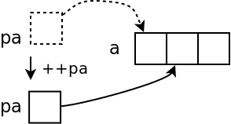
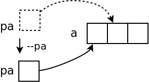
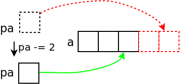
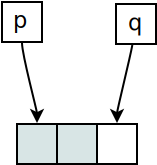
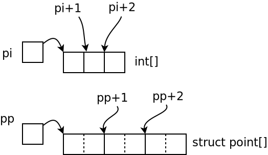

Standard Template Library: Basics¶
Containers, Iterators, Algorithms¶
Genius Combination of …
Operator overloading (
->,*,+,+=,++)Abstract containers
Abstract algorithms
… based upon pointer arithmetic!
⟶ Pointer arithmetic, revisited …
Pointer Arithmetic (1)¶
Pointer and arrary index
|
|

Pointer Arithmetic (2)¶
Pointer Increment int *pa = a;
++pa;
|
 |
Pointer Decrement int *pa = &a[1];
--pa;
|
 |
Pointer Arithmetic (3)¶
Pointers don’t necessarily point to valid memory locations …
*pa = a + 4;
pa -= 2;
i = *pa; /* ok */
|
 |
*pa = a - 1;
pa += 2;
i = *pa; /* ok */
|
 |
Pointer Arithmetic: Difference¶
How many array elements are there between two pointers?
p = &a[0];
q = &a[2];
num = q - p; /* 2 */
|
 |
General practice (“The Spirit of C”):
Beginning of an array (a set of elements) is a pointer to the first element
End is pointer past the last element
Pointer Arithmetic: Array Algorithms¶
Iteration over all elements of an array …
int sum(const int *begin, const int *end)
{
int sum = 0;
while (begin < end)
sum += *begin++; /* precedence? what? */
return sum;
}
 |
Pretty, isn’t it? |
Pointer Arithmetic: Step Width? (1)¶
So far: pointer to int - how about different datatypes?
⟶ same!
pointer + n: points to the n-th array element from pointer
Type system knows about sizes
Pointer knows the type of the data it points to
Careful with
voidandvoid*
Pointer Arithmetic: Step Width? (2)¶
struct point
{
int x, y;
};
struct point points[3], *begin, *end;
begin = points;
end = points + sizeof(points)/sizeof(struct point);
while (begin < end) {
...
++begin;
}
Pointer Arithmetic: Arbitrary Data Types?¶
sizeof: size (in bytes) of a type or variable sizeof(int)
sizeof(struct point)
sizeof(i)
sizeof(pi)
sizeof(pp)
|
 |
Container¶
Container
Extremely practical collection of template classes
Sequential container ⟶ array, list
Associative containers
Dynamically growing array: std::vector¶
#include <vector>
std::vector<int> int_array;
int_array.push_back(42);
int_array.push_back(7);
int_array.push_back(666);
for (int i=0; i<int_array.size(); ++i)
std::cout << int_array[i] << ' ';
Pointer Arithmetic¶
std::vector<int>::const_iterator begin = int_array.begin();
std::vector<int>::const_iterator end = int_array.end();
while (begin < end) {
std::cout << *begin << ' ';
++begin;
}
Algorithms: std::copy (1)¶
Copy array by hand
std::vector<int> int_array;
int_array.push_back(42);
int_array.push_back(7);
int_array.push_back(666);
int int_array_c[3];
std::vector<int>::const_iterator src_begin = int_array.begin();
std::vector<int>::const_iterator src_end = int_array.end();
int *dst_begin = int_array_c;
while (src_begin < src_end)
*dst_begin++ = *src_begin++;
Algorithms: std::copy (2)¶
Copy using STL
#include <algorithm>
std::vector<int> int_array;
// ...
int int_array_c[3];
std::copy(int_array.begin(), int_array.end(), int_array_c);
Adapting Iterators: std::ostream_iterator¶
Copy: array to std::ostream, which looks like another array
#include <iterator>
int int_array_c[] = { 34, 45, 1, 3, 2, 666 };
std::copy(int_array_c, int_array_c+6,
std::ostream_iterator<int>(std::cout, " "));
std::vector<int> int_array;
// ...
std::copy(int_array.begin(), int_array.end(),
std::ostream_iterator<int>(std::cout, " "));
Adapting Iterators: std::back_insert_iterator (1)¶
Problem
std::copy()requires existing/allocated memory ⟶ performance!⟶ copying onto empty
std::vectorimpossible
int int_array_c[] = { 34, 45, 1, 3, 2, 666 };
std::vector<int> int_array; // empty!
std::copy(int_array_c, int_array_c+6, int_array.begin());
Adapting Iterators: std::back_insert_iterator (2)¶
Solution: std::back_insert_iterator
int int_array_c[] = { 34, 45, 1, 3, 2, 666 };
std::vector<int> int_array;
std::copy(
int_array_c, int_array_c+6,
std::back_insert_iterator<std::vector<int> >(int_array));